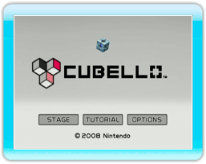

Selecciona CUBELLO en el Menú de Wii y, a continuación, selecciona START (comenzar)
en la pantalla del canal para acceder a la pantalla del título. Una vez en la pantalla del título, oprime

o

para acceder al menú principal. Selecciona una opción del menú y confirma con
.
STAGE
(fases)
|
En este modo tendrás que eliminar todos los cubos del Cubello,
dejando tan solo su núcleo, antes de que se agoten los cubos del cargador (ver 9. Cómo jugar).
Tras escoger una fase y un nivel, selecciona START (comenzar)
para empezar el juego. Si seleccionas EXIT (salir), volverás a la pantalla del título.
Nota: Cuanto más avanzadas sean las fases, más colores tendrá el Cubello, lo que elevará el nivel de dificultad.
|
ENDLESS
(indefinido)
|
En este modo puedes continuar eliminando cubos hasta que se agoten los cubos del cargador (ver 8. Pantalla de juego ).
Cuando te quedes sin cubos, se calculará tu puntuación según la cantidad de cubos que hayan quedado en el Cubello.
Para conseguir una buena puntuación, intenta eliminar tantos cubos como puedas.
Si eliminas todos los cubos hasta dejar tan solo el núcleo del Cubello, aparecerá un Cubello nuevo.
Tras seleccionar ENDLESS (modo indefinido) aparecerá la pantalla de inicio.
Selecciona START (comenzar) para comenzar el juego.
|
TUTORIAL
(demostración)
|
Selecciona esta opción para ver una demostración de cómo se juega.
|
OPTIONS
(opciones)
|
Selecciona esta opción para ajustar el brillo de la pantalla.
|
STAFF CREDITS
(créditos)
|
Selecciona esta opción para ver los créditos del juego.
|
Nota: Podrás seleccionar ENDLESS (modo indefinido) y STAFF CREDITS (créditos)
una vez que hayas completado un cierto número de niveles en STAGE (modo de fases).
● Cuando juegues por primera vez
Si es la primera vez que juegas, selecciona STAGE (modo de fases) para empezar a jugar.
Cuando hayas completado el primer nivel de una fase,
podrás seleccionar los dos siguientes niveles de esa fase y el primer nivel de la siguiente fase.
 |
 |
 |
 |
Acerca del guardado de datos
Este juego guardará automáticamente cuando completes una fase, en el fin del juego,
o cuando hagas un cambio en OPTIONS (opciones).
Si deseas borrar tus datos guardados, puedes hacerlo desde la pantalla de Gestión de Datos.
Por favor, consulta el manual de operaciones de la consola Wii.
Nota: Solo se puede guardar un archivo.
|
¡Atención!
Las siguientes acciones podrían provocar que no se guardaran los récords o que se perdieran
los datos guardados. ¡No podrás recuperar los datos, así que ten cuidado!
-
Apagar o reiniciar la consola o el mando de Wii mientras se están guardando datos.
-
Desconectar el adaptador de corriente de tu consola Wii mientras estás jugando.
|
|
 |
 |
 |
 |